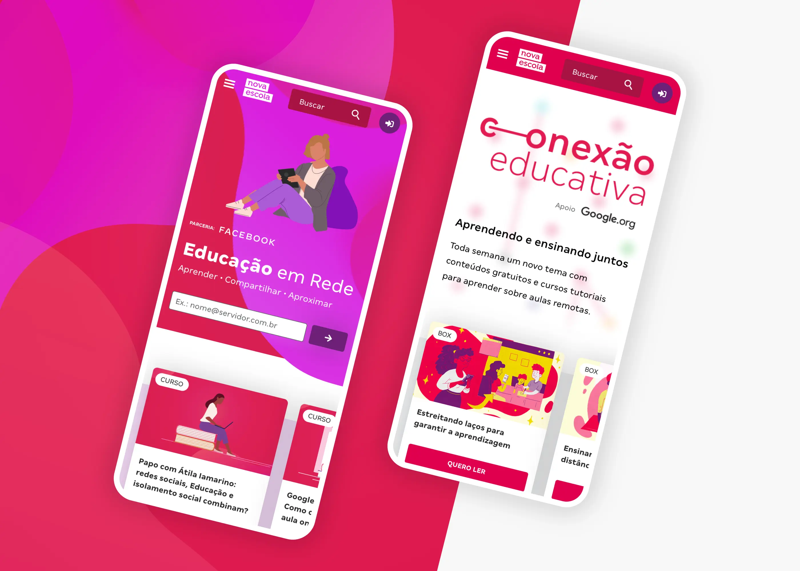
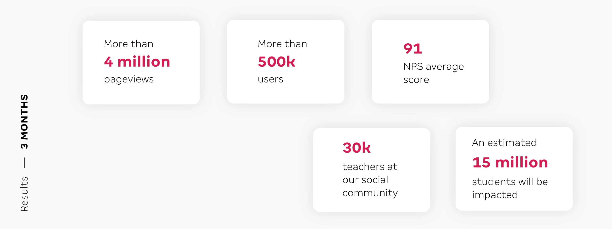
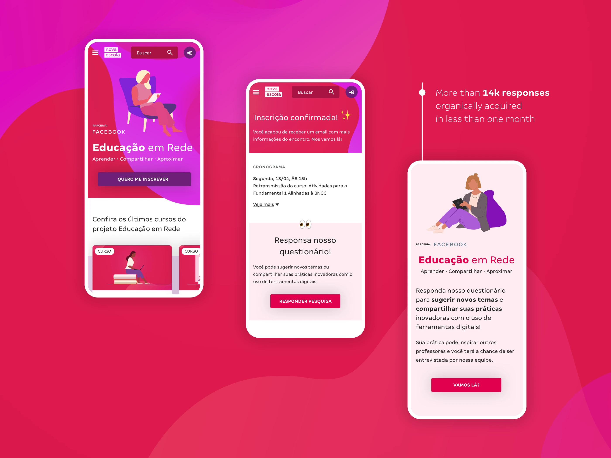
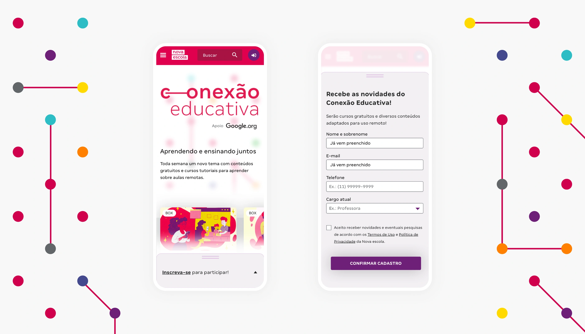
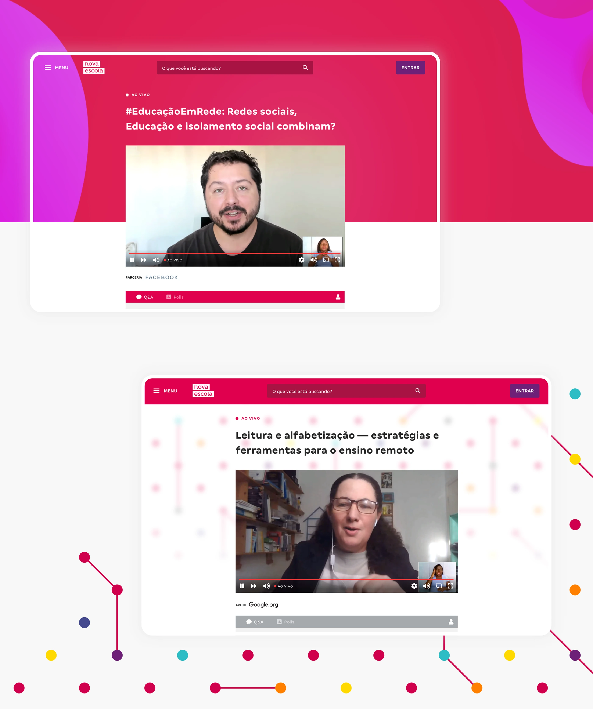
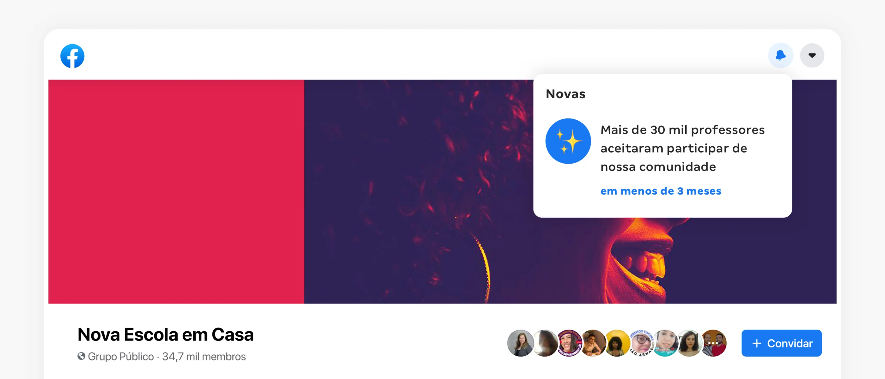
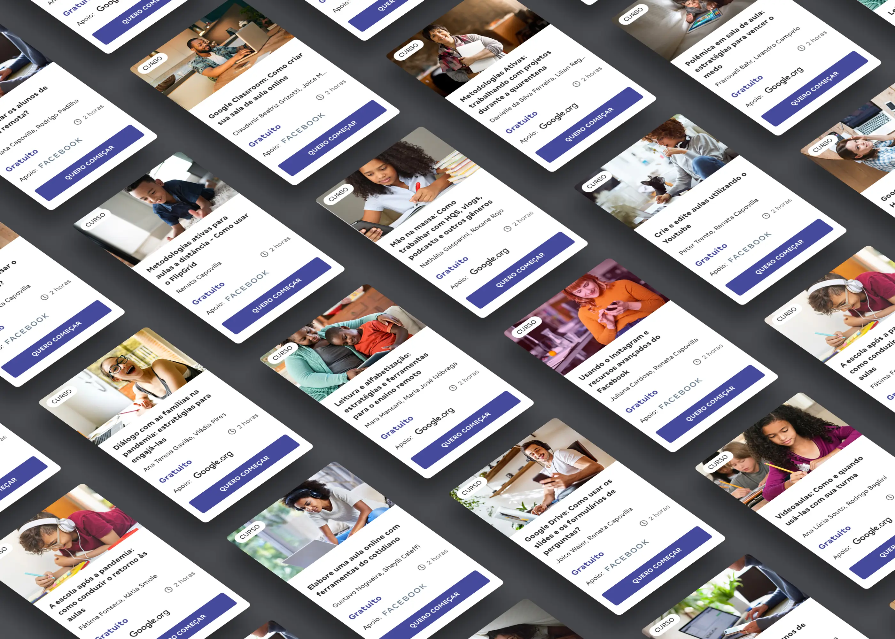

Teaching Through the Pandemic
A series of live, multi-platform webinars for Brazilian public school teachers, produced in independent partnerships with Google and Facebook during COVID-19. Led UX across registration flows, audience segmentation, live broadcast experiences, and community-building strategies that grew a Facebook group to 30,000 educators and launched 16 free courses in under three months.

Scenario and roles
The pandemic brought serious challenges to Brazilian public education. During this period, we have seen our educators reinvent their practices with impressive speed in order to adapt the relationship between teaching and technology as much as possible. Given this context, Nova Escola, in independent partnerships with Google and Facebook, has put itself in search of quick and effective solutions to support and strengthen this movement. Thus, the "Networked Education" and "Educational Connection" projects were born.
As the project's UX Designer, my challenge was not only to deeply understand the most emerging needs of this public, but also to think of solutions that could guarantee good interactions, be welcoming, and reach as many educators as possible.

Deliverables
The best solution I found, along with the team, was to create a series of live, multi-platform meetings focused on the key subjects that emerged. The promotion of the meetings was segmented by audience and the registration experience was created, allowing the team to retrieve the contact information of the participants for further communication and for sending reminders about the meetings. Plus, an optional opinion poll was sent to the participant right after the registration.

Example of a registration page for the "Educação em Rede" project, with an organic link to the project's theme search.

Registration form to participate in the "Conexão Educativa" project, in partnership with Google.

Examples of pages for live broadcast of "Educação em Rede" and "Conexão Educativa".

In the Facebook group, a series of direct interactions were made with the participating educators, such as polls, surveys, short live broadcasts, and discussions about the presented topics.
Results and learnings
As a way to monitor the project's performance indicators, Google, Youtube and Facebook data analysis tools were used, as well as specific strategies to measure the success of the experience, using screen recording and heat maps (Hotjar), along with events created to monitor the conversion funnels (Mixpanel). The result was very positive. With a great interest in participation and an assertive choice of subjects according to the audience's opinion, the meetings were quite successful and had a great index of interaction among educators.
In addition to the broad participation in the synchronous live meetings and intense interaction with the public, our Facebook group quickly reached 30,000 users, becoming a place for meaningful exchanges with users and for dialogue among the participants themselves. Polls, post-meeting events, and important debates were and are held in this group, creating a sense of community that is very important to the results achieved.
Building an experience flow was essential to integrate several Nova Escola products within the projects' purpose. We saw our search and access numbers grow dramatically, as well as a significant increase in registrations and downloads of content. The consistency of feedback was also a milestone — several educators came back meeting after meeting looking for their participation certificates and filled out our attendance list, which had an integrated satisfaction survey that provided us with a large amount of feedback and learnings.
In addition, the opportunity to transform all these meetings into free self-instructional courses on our platform was an important gain for the brand, increasing our reach for new users and engaging existing users with other products of the Association.

Overall, 16 courses were launched in less than three months, with broad public participation in the choice of subjects and content creation.
The learning was fast and intense, as was the implementation of the project. Being so close to the teachers on such a large scale gave us a very clear understanding of the problem to be solved. As we took the risks of making a live production, we grew a lot with experimentation, participation, co-creativity and interaction, always creating content strategies based on the participants' opinions.
Plus, never before have we worked in such an interdisciplinary way between squads and external teams. Even though such intense implementations with tight schedules generate noise among the team, these were the moments that made us learn and mature the Nova Escola Courses product the most.
Finally, there is no greater gain than following the project's satisfaction surveys and seeing how an experience centered on the users' real needs can impact reality in a positive way.
Team: Matheus Petroni (Product Designer), Karine Presotti (Product Manager), Juliano Dias e Letícia Alves (Marketing Analyst), Bárbara Castro (Content Coordinator), Vanessa Camargo (Content Assistant), Juliana Reis (Developer), Frederico Gerondeti and Lincoln (Designers).